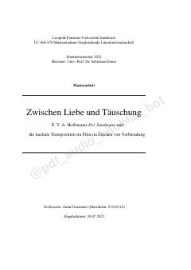

ZLE.T.A. Xofmanning 'Qum odam' asarida idrok va aldanish tushunchalarining adabiy-tanqidiy tahlili.
Ushbu magistrlik dissertatsiyasi E.T.A. Xofmanning 'Qum odam' asari va uning 2012-yildagi film talqinida 'ko'r-ko'rona ishonish' (Verblendung) tushunchasini tahlil qiladi. Muallif adabiyot va kinoda inson idrokining aldanishi, o'z-o'zini aldash va Narcissus afsonasining zamonaviy talqinlarini tadqiq etadi.